Felpita · Campaña de Navidad
El viaje del Osito
Primera edición completa y el proceso que la construyó: los personajes, los doce planos de la historia y cada plano animado.
Primera edición · 44 s · música de referencia, no definitiva.
El proceso
De los personajes a la edición.
- 1Personajes
Felpita en sus dos versiones, el bolso, la abuela y la escala.
- 2Los 12 planos
Un fotograma final por cada momento de la historia.
- 3Animación
Cada plano en movimiento.
- 4Primera edición
Todo junto con música de referencia.
- 5Próximo
Planos de transición, música definitiva y cierre de marca.
Personajes
Todo parte del Felpita Bear System: proporciones, mirada, hocico corto, escala de 60 cm. Estas fichas fijan al personaje para que sea el mismo en cada plano.

Con bufanda: solo afuera, en el Polo Norte.

Sin bufanda: en casa, en la Argentina de verano y adentro de lo de la abuela.
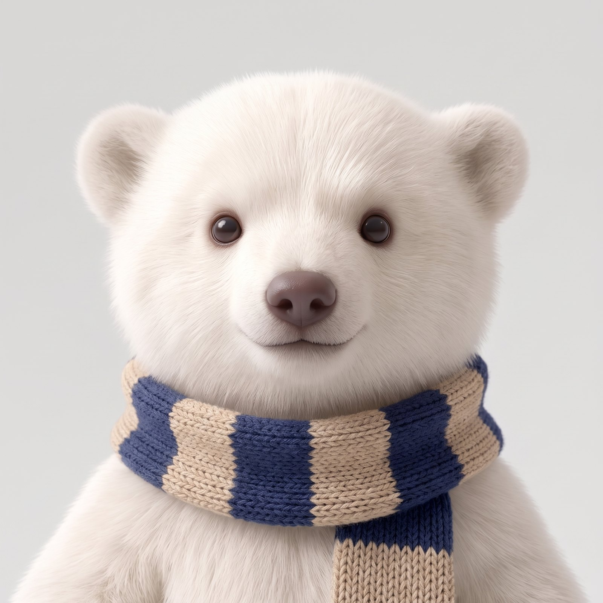
La mirada, el hocico corto y la sonrisa contenida del Bear System.
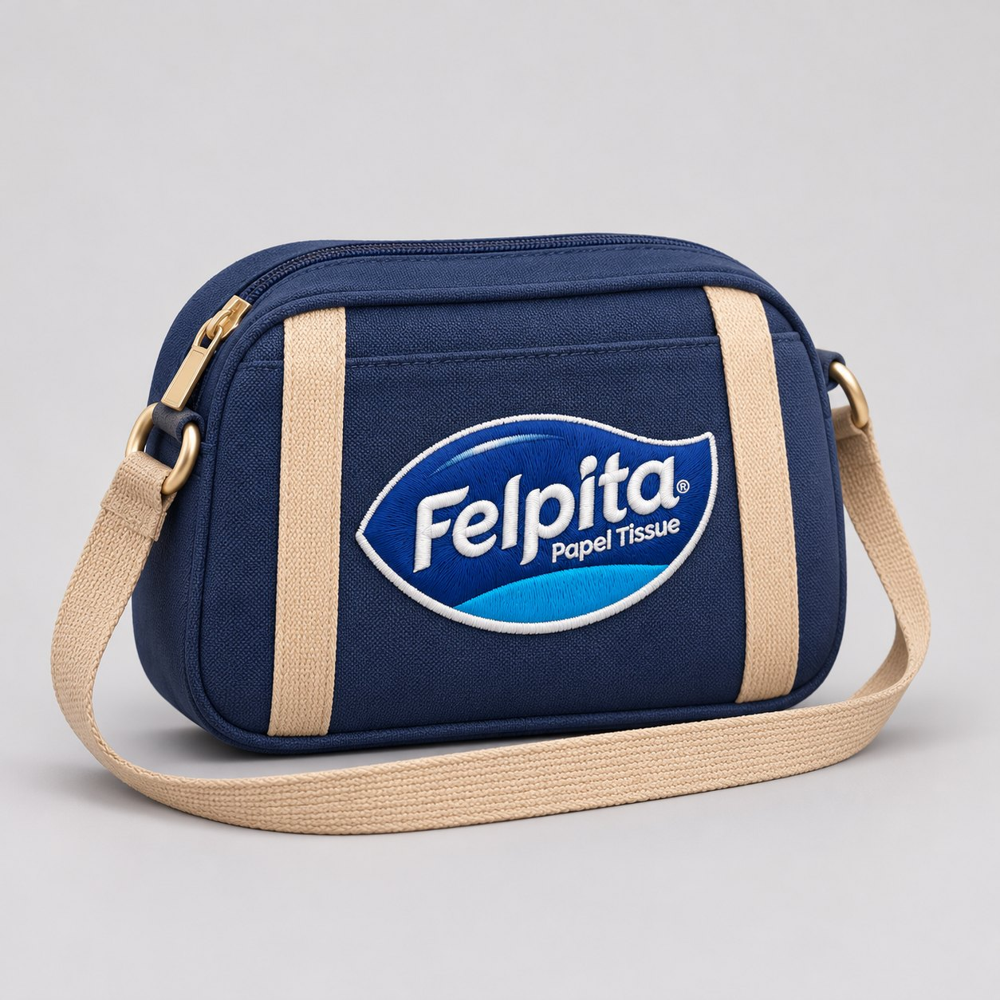
Bolso azul marino con el logo bordado. Lo acompaña en todo el viaje.
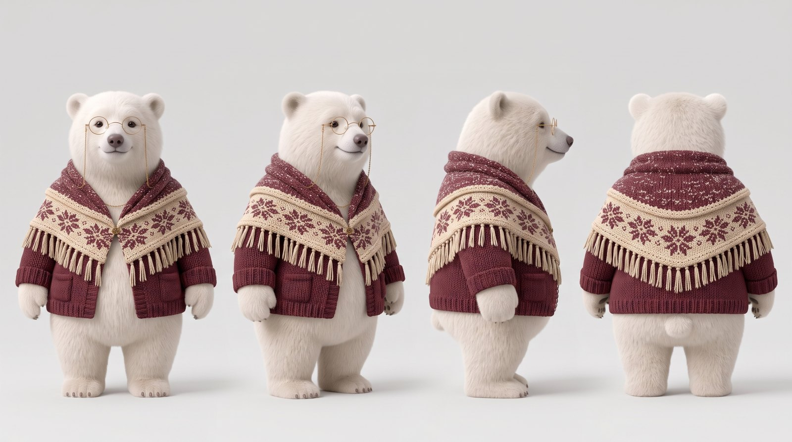
De la misma familia que Felpita: anteojos con cadenita, saco bordó y chal tejido.

Felpita mide 60 cm; la abuela, 1 metro.
Los 12 planos
Un fotograma final por cada momento del viaje, con encuadres variados como en una película.
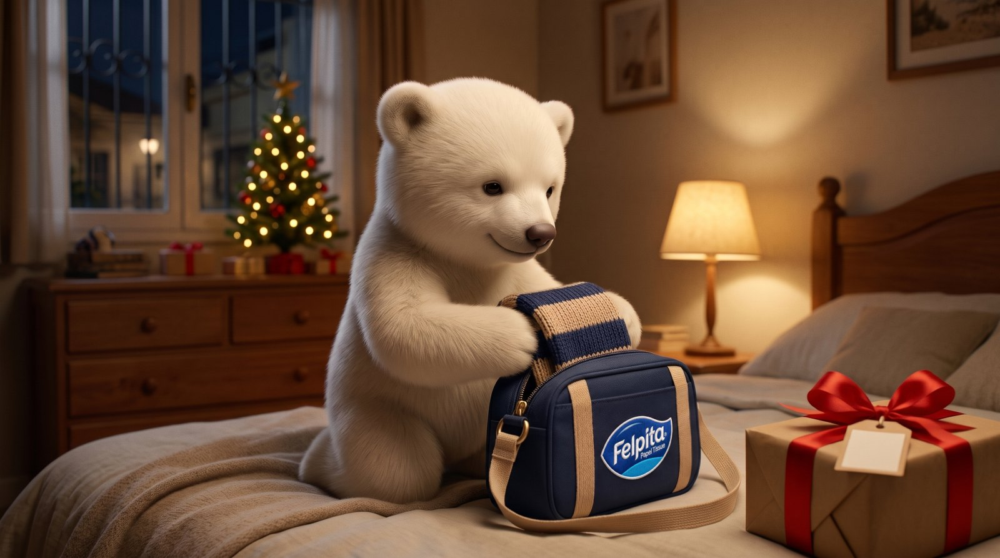
Plano medio en su cuarto, de noche. Guarda la bufanda en el bolso: todavía no la necesita.
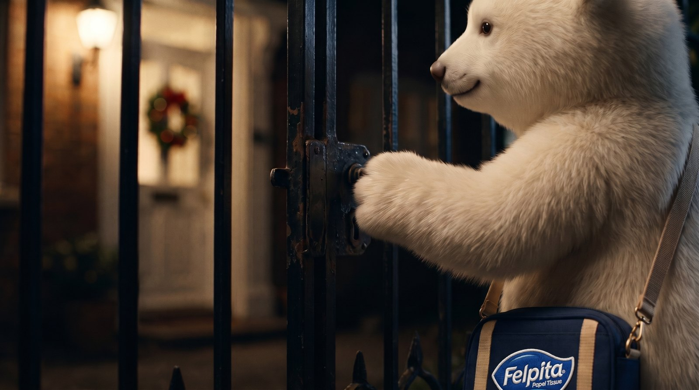
Detalle: su pata cierra la reja de la casa.
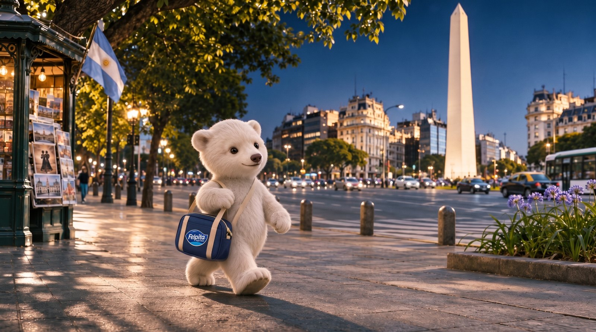
La 9 de Julio y el Obelisco al atardecer.

Desde adentro del vagón: sube al tren en Avellaneda.
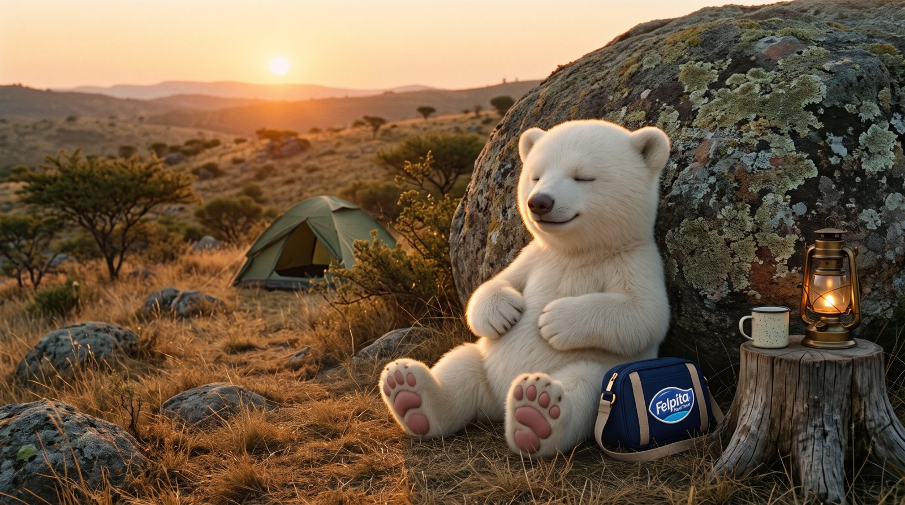
Atardecer en las sierras: se queda dormido contra una roca.
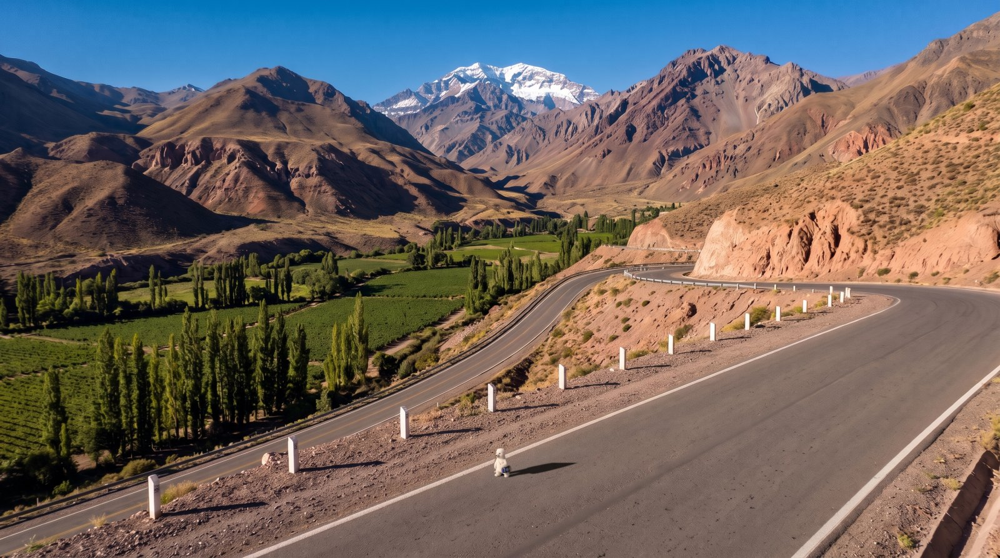
Plano aéreo: un osito chiquito frente a la cordillera y el Aconcagua.
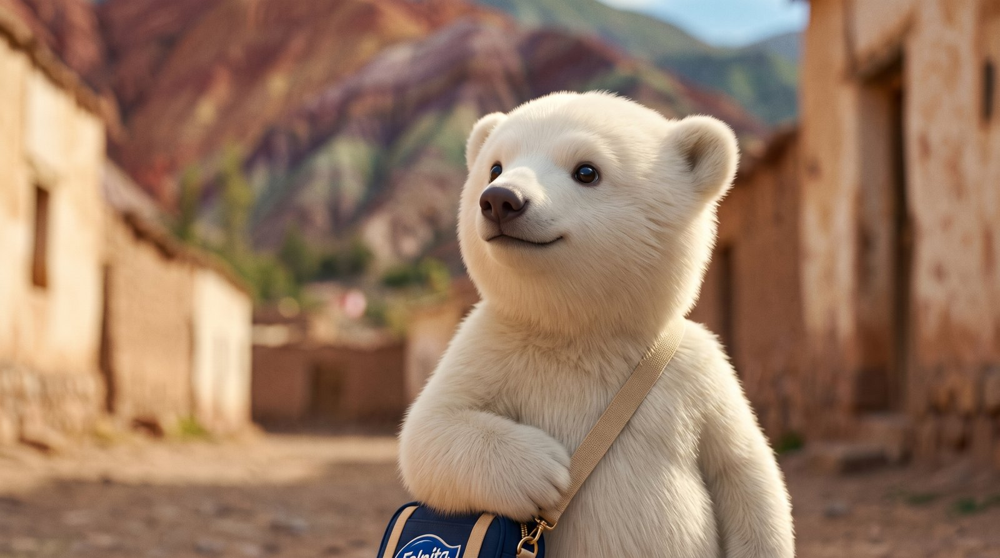
Primer plano en Purmamarca, con el Cerro de los Siete Colores.

Se recuesta y mira las nubes: el salto hacia el Polo Norte.
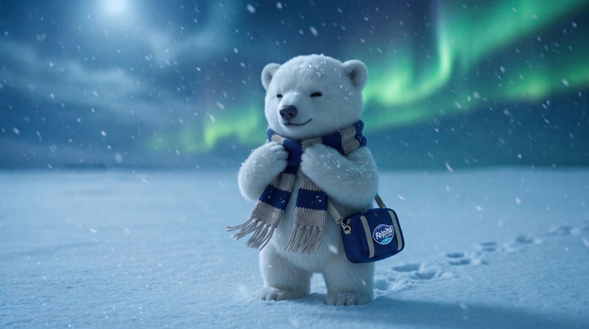
Llega el frío: se pone la bufanda bajo la aurora.

Va dejando sus huellas en la nieve hasta la cabaña.
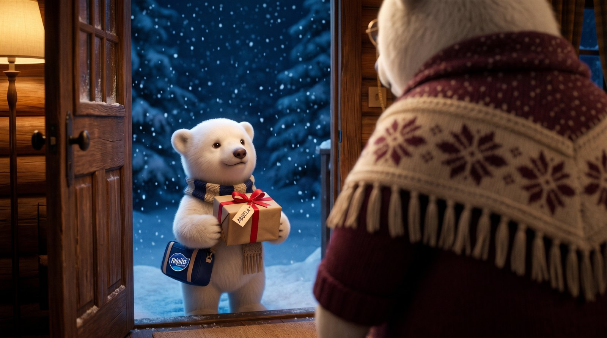
Se abre la puerta: la abuela. El regalo, la emoción, el abrazo.

La cena de Navidad: charlan junto al fuego.
Animación
Cada plano en movimiento. En la edición se usa la mejor parte de cada uno.